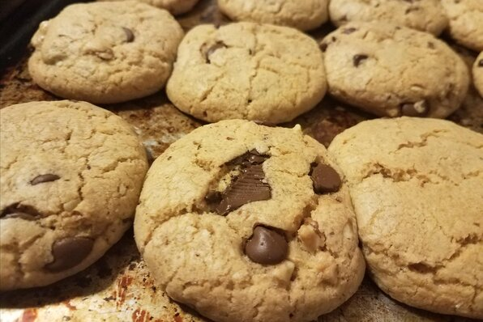

chocolate chip cookies

This is the best chocolate chip cookies recipe ever! No funny ingredients, no chilling time, etc.
Just a simple, straightforward, amazingly delicious, doughy yet still fully cooked,
chocolate chip cookie that turns out perfectly every single time!
Ingredients
- 1 cup butter, softened
- 1 cup white sugar
- 1 cup packed brown sugar
- 2 eggs
- 2 teaspoons vanilla extract
- 1 teaspoon baking soda
- 2 teaspoons hot water
- ― teaspoon salt
- 3 cups all-purpose flour
- 2 cups semisweet chocolate chips
- 1 cup chopped walnuts
Steps
- Preheat oven to 350 degrees F (175 degrees C).
- Cream together the butter, white sugar, and brown sugar until smooth.
- Beat in the eggs one at a time, then stir in the vanilla. Dissolve baking soda in hot water.
- Add to batter along with salt. Stir in flour, chocolate chips, and nuts. Drop by large spoonfuls onto ungreased pans.
- Bake for about 10 minutes in the preheated oven, or until edges are nicely browned.